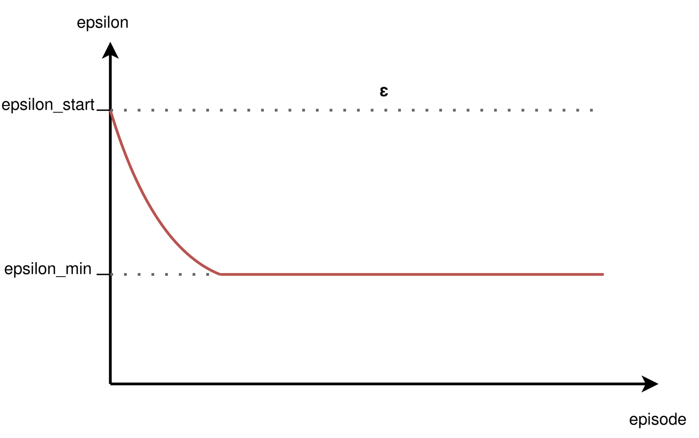

A real-life example of the exploration vs exploitation dilemma: where to eat?
(Image source: UC Berkeley AI course slide, lecture
11.)
Agent must explore to discover rewarding actions and states.
Agent must exploit known information to maximize reward.
Balancing exploration and exploitation is critical for efficient learning.
Too much exploration: slow progress; too much exploitation: suboptimal policies.
Unstructured Exploration
$\varepsilon$-greedy
Deep Q-Learning Algorithm
FOR EACH episode
$\quad$ $\mathbf{s} \leftarrow \text{env.reset}()$
$\quad$ DO
$\quad\quad$ $\mathbf{a} \leftarrow \color{red}{\epsilon\text{-greedy}(\mathbf{s},
\hat{Q}_{\mathbf{\omega_1}})}$
$\quad\quad$ $r, \mathbf{s'} \leftarrow \text{env.step}(\mathbf{a})$
$\quad\quad$ Store transition $(\mathbf{s}, \mathbf{a}, r, \mathbf{s'})$ in $\mathcal{D}$
$\quad\quad$ If $\mathcal{D}$ contains "enough" transitions
$\quad\quad\quad$ Sample random batch of transitions $(\mathbf{s}_j, \mathbf{a}_j, r_j,
\mathbf{s'}_j)$ from $\mathcal{D}$ with $j=1$ to $m$
$\quad\quad\quad$ For each $j$, set $y_j =
\begin{cases}
r_j & \text{for terminal } \mathbf{s'}_j\\
r_j + \gamma \max_{\mathbf{a}^\star} \hat{Q}_{\mathbf{\omega_{2}}}
(\mathbf{s'}_j)_{\mathbf{a}^\star} & \text{for non-terminal } \mathbf{s'}_j
\end{cases}$
$\quad\quad\quad$ Perform a gradient descent step on $\left( y_j -
\hat{Q}_{\mathbf{\omega_1}}(\mathbf{s}_j)_{\mathbf{a}_j} \right)^2$ with respect to the weights
$\mathbf{\omega_1}$
$\quad\quad\quad$ Every $\tau$ steps reset $\hat{Q}_{\mathbf{\omega_2}}$ to
$\hat{Q}_{\mathbf{\omega_1}}$, i.e., set $\mathbf{\omega_2} \leftarrow \mathbf{\omega_1}$
$\quad\quad$ $\mathbf{s} \leftarrow \mathbf{s'}$
$\quad$ UNTIL $\mathbf{s}$ is final RETURN $\mathbf{\omega_1}$

At each step:
with probability ε, select a random action;
with probability 1-ε, select the action with the highest estimated value.
👉 Simple to implement, widely used in discrete action spaces.
Typically, ε is annealed (decreased) over time to shift from exploration to exploitation.
The decay schedule is a hyperparameter and often determined empirically.
Unstructured Exploration
Gaussian Noise
Add zero-mean Gaussian noise to the action output by the policy.
Common in algorithms for continuous control (e.g., DDPG, TD3).
Noise variance can be annealed to reduce exploration over time.
Encourages local exploration around the current policy's actions.
$$\mu'(s_t) = \mu(s_t | \theta^{\mu}_t) + \mathcal{N}$$
where $\mu(s_t | \theta^{\mu}_t)$ is the actor network with weights $\theta^{\mu}_t$
and $\mathcal{N}$ is a noise process (e.g. Gaussian or Ornstein-Uhlenbeck).
Limits of Unstructured Exploration
Case Study: Montezuma's Revenge (Atari)
Unstructured methods (ε-greedy, Gaussian noise) struggle in environments with sparse
rewards and complex exploration requirements.
Montezuma's Revenge (Atari): classic benchmark for hard exploration.
Random actions rarely reach rewarding states; agent fails to learn meaningful behavior.
Motivates the need for intrinsic motivation and structured exploration techniques.
Maximum Entropy RL
Exploration and Robustness via Entropy
Augments the reward with an entropy term to encourage diverse actions:
$$ J(\pi) = \mathbb{E}_{\pi} \left[ \sum_t \Big( r_t + \alpha \mathcal{H}(\pi(\cdot|s_t)) \Big) \right] $$
where $\mathcal{H}$ is the entropy and $\alpha$ controls the exploration-exploitation tradeoff.
Promotes stochastic policies, improving robustness and exploration.
Widely used in robotics and continuous action domains.
Augment environment reward $r_t$ with an intrinsic reward $r^i_t$:
$$r_t \leftarrow r_t + \beta \cdot r^i_t$$
where $\beta$ balances exploitation vs exploration.
👉 Encourages agent to explore novel or uncertain states.
Two main approaches:
Count-based exploration: bonus for visiting rarely seen states.
Prediction-based exploration: bonus for high prediction error (surprise).
Intrinsic Reward-based Exploration
Count-based Exploration
Assigns an exploration bonus that decreases with the state visit count $N(s_t)$:
$$r^i_t = \frac{1}{\sqrt{N(s_t)}}$$
Advantage: Effective in small, discrete state spaces.
Limitation: Infeasible in high-dimensional or continuous spaces (counts become sparse or meaningless).
Alternatives: approximate state visitation counts:
Bellemare et al., 2016 – CTS-based pseudocounts
Ostrovski et al., 2017 – PixelCNN-based pseudocounts
Tang et al., 2017 – Hash-based counts
Intrinsic Reward-based Exploration
Prediction-based Exploration
Uses prediction error as intrinsic reward:
$$r^i_t = \| f(s_t, a_t) - s_{t+1} \|$$
where $f$ is a learned forward dynamics model.
Properties:
Agent is rewarded for visiting states where its model is uncertain or inaccurate (novelty/surprise).
Common in high-dimensional or continuous environments.
Limitations:
Model can be "fooled" by stochasticity or noise.
May focus on unpredictable but irrelevant states.
Motivates use of random networks (e.g., RND) for more robust novelty estimation.
Intrinsic Reward-based Exploration
Limits of Prediction-based Intrinsic Motivation
In stochastic environments, dynamics are unpredictable (e.g., random noise, a "noisy TV" showing random images).
Prediction error remains high even for familiar states.
Agent is attracted to noisy or unpredictable regions, leading to biased and inefficient exploration.
Intrinsic Reward-based Exploration
Motivation for RND
A measure of novelty that is more stable and less sensitive to randomness.
Target network = a fixed random function \( f_{\text{target}}(s) \).
Since it is frozen, it defines a stable representation of states.
Each state has a deterministic, time-invariant signature.
Predictor network = a network trained to approximate \( f_{\text{target}}(s) \).
The prediction error is high at first for all states.
As some states are revisited, the predictor learns to approximate them → error decreases.
Truly novel states remain hard → high error → strong intrinsic reward.
👉 Unlike dynamics prediction, this error does not depend on the environment’s stochasticity, but only on whether the state has already been “learned” by the predictor.